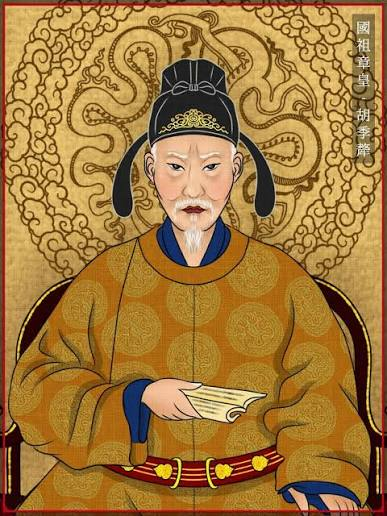
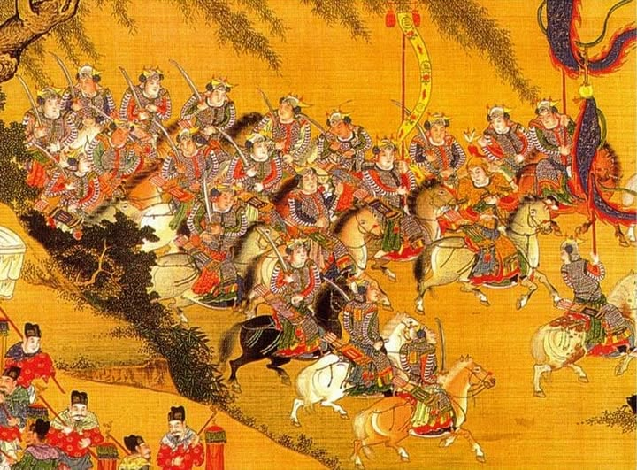
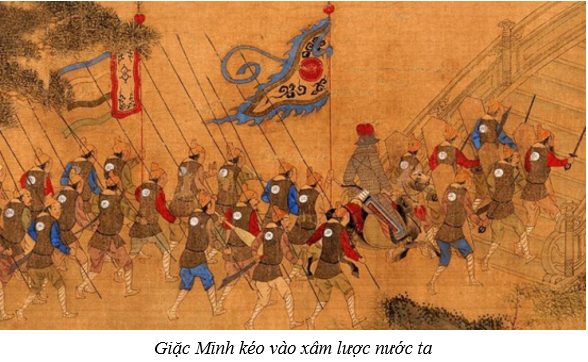
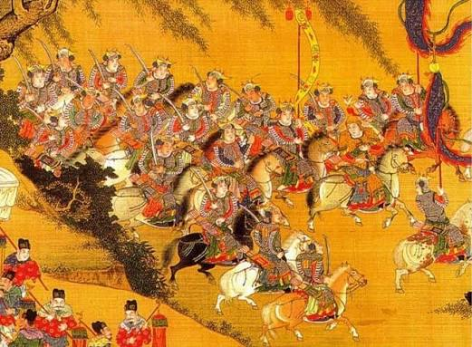

Các điểm dừng chân mở khóa dần khi bạn đi qua từng chương. Sơ đồ cách điệu, không theo tỷ lệ địa lý thật.
📖 ĐÃ KIỂM CHỨNG
Tiêu đề
Nội dung...
Trích nguồn
💠
Liên tiếp
0
Phán đoán liên tiếp chuẩn xác!
💠 COMBO x3
+10 điểm thưởng
Điểm
0
Vai Trò
—
📜
Sử Việt Tương Tác
HỒ QUÝ LY Canh Bạc Cải Cách
Năm ~1370 — 1407 · Nhà Cải Cách Đầy Tranh Cãi
Ngươi là Hồ Quý Ly — quyền thần bước ra từ triều Trần suy vong, dám in tiền giấy, hạn điền, hạn nô, dựng thành đá kỳ vĩ và soán ngôi lập nước Đại Ngu. Nhưng cải cách táo bạo nhất có đủ để cứu một vương triều, khi lòng dân chưa kịp đồng thuận? Một hành trình 6 chương về tầm nhìn, tham vọng và bi kịch mất nước.
📜 6 chương🎓 Nhiều kiểu thử thách📖 Có nguồn tham khảo
▾ hoặc cuộn xuống
⚖️ CHƯƠNG I · ~1370-1394 — QUYỀN THẦN GIỮA TRIỀU SUY VONG 📖 nguồn

⚖️ TRIỀU ĐÌNH NHÀ TRẦN CUỐI THẾ KỶ 14
1
~1390
Quyền Thần
2
1395
Cải Cách
3
1400
Soán Ngôi
4
1397
Thành Đá
5
1406
Giặc Minh
6
1407
Mất Nước
📚 BỐI CẢNH
Cuối thế kỷ 14, nhà Trần đã suy yếu rõ rệt sau gần 175 năm trị vì. Vua nhỏ tuổi, quý tộc tranh giành ruộng đất, nạn đói và khởi nghĩa nông dân nổ ra khắp nơi. Đất nước cần một bàn tay đủ mạnh để xốc lại tất cả — hoặc sẽ tự sụp đổ.
Hồ Quý Ly bước vào cung, nhờ hai người cô từng là hoàng hậu mà có chỗ đứng. Nhưng ông không dừng ở đó: từng bước, từng bước, binh quyền dần lọt vào tay ông, trong khi các vương hầu họ Trần mải mê tranh chấp lẫn nhau.
MỘT LÃO THẦN HỌ TRẦN — THÌ THẦM TRONG SÂN CHẦU
"Ông ta không phải hoàng thân, sao lại nắm cả binh quyền lẫn tài chính quốc gia? Nhưng... nhìn triều đình rối ren thế này, có lẽ chỉ có ông ta mới đủ gan xoay chuyển."
⚡ PHÁN ĐOÁN CHỚP NHOÁNG
"Vào thời điểm này, nhà Trần vẫn còn hùng mạnh như thời Trần Hưng Đạo đánh Nguyên Mông." — Đúng hay Sai?
Đứng trước một triều đình mục ruỗng, có hai con đường: âm thầm củng cố quyền lực để rồi ra tay quyết liệt, hoặc trung thành phò tá đến cùng dù biết triều đại đang lụi tàn.
💭 SUY NGẪM (không chấm điểm)
Khi một thể chế đã mục ruỗng từ bên trong, người có tài — nhưng không có "danh chính ngôn thuận" — nên chọn cải cách từ trong hệ thống, hay chờ thời để thay thế hẳn hệ thống đó?
Không có đáp án đúng/sai, đây là câu hỏi để bạn tự suy ngẫm — chính câu hỏi này sẽ theo bạn suốt toàn bộ câu chuyện.
❌ LỰA CHỌN KHÁC — AN PHẬN GIỮA THỜI LOẠN
Nếu chỉ khoanh tay đứng nhìn, rất có thể một quyền thần khác — kém tài và kém tầm nhìn hơn — sẽ nắm lấy triều đình, và những cải cách táo bạo về sau có lẽ sẽ không bao giờ xuất hiện.
Nhiều khả năng nhà Trần sẽ tiếp tục suy yếu dần trong tay các vương hầu tranh quyền, không ai đủ sức đưa ra những cải cách tài chính - ruộng đất táo bạo. Đất nước có thể rơi vào khủng hoảng kéo dài hơn trước khi có bất kỳ ai đứng ra thay đổi cục diện.
📜 CHƯƠNG II · ~1395-1399 — CẢI CÁCH TÁO BẠO 📖 nguồn
📜 TIỀN GIẤY — HẠN ĐIỀN — HẠN NÔ
1
~1390
Quyền Thần
2
1395
Cải Cách
3
1400
Soán Ngôi
4
1397
Thành Đá
5
1406
Giặc Minh
6
1407
Mất Nước
💡 TƯ DUY VƯỢT THỜI ĐẠI
Trước Minh Trị Duy Tân của Nhật Bản gần 500 năm, Hồ Quý Ly đã dám in tiền giấy, giới hạn ruộng đất quý tộc, đưa toán học vào khoa cử, dịch sách ra chữ Nôm. Đây là những ý tưởng táo bạo bậc nhất lịch sử phong kiến Việt Nam.
Ba chính sách lớn được ban ra gần như liên tiếp: "hạn điền" giới hạn ruộng đất tư nhân, "hạn nô" giới hạn số nô tì mỗi nhà, và tiền giấy "Thông bảo hội sao" thay cho tiền đồng. Mỗi chính sách đều đánh thẳng vào đặc quyền của giới quý tộc nhà Trần.
MỘT ĐẠI ĐIỀN CHỦ HỌ TRẦN
"Ruộng đất tổ tiên để lại, sao có thể bị hạn định như một món hàng? Còn thứ giấy vẽ chữ kia, sao dám gọi là tiền để đổi lấy thóc gạo thật?"
🔗 GHÉP CẶP — CHÍNH SÁCH & MỤC ĐÍCH
Bấm vào một chính sách bên trái, rồi bấm đúng mục đích tương ứng bên phải.
CHÍNH SÁCH
MỤC ĐÍCH THỰC SỰ
Đã ghép: 0/3
Các chính sách ra đời gần như dồn dập, chỉ trong vài năm — khác hẳn cách làm từ tốn, dò ý dân trước của nhiều cải cách khác trong lịch sử.
💭 SUY NGẪM (không chấm điểm)
Một cải cách đúng đắn về lý thuyết nhưng ban hành quá nhanh, quá dồn dập — liệu có còn là cải cách "đúng" nếu nó khiến lòng người ly tán ngay từ đầu?
Ghi nhớ câu hỏi này — nó sẽ quay lại vào phần kết của câu chuyện.
❌ LỰA CHỌN KHÁC — CẢI CÁCH TỪ TỐN
Đây không phải điều đã xảy ra trong lịch sử. Hồ Quý Ly chọn tốc độ và quyết đoán — có lẽ vì ông hiểu rằng nếu chậm trễ, phe quý tộc bảo thủ sẽ kịp tập hợp lực lượng để bóp chết mọi cải cách ngay từ trứng nước.
Cải cách chậm rãi có thể giúp lòng dân đồng thuận hơn, giảm bớt phản kháng từ quý tộc. Nhưng cũng có nguy cơ bị trì hoãn vô thời hạn, hoặc bị chính những người có đặc quyền tìm cách vô hiệu hóa trước khi kịp phát huy tác dụng.
👑 CHƯƠNG III · NĂM 1400 — SOÁN NGÔI, LẬP ĐẠI NGU 📖 nguồn

👑 CHẤM DỨT 175 NĂM NHÀ TRẦN
1
~1390
Quyền Thần
2
1395
Cải Cách
3
1400
Soán Ngôi
4
1397
Thành Đá
5
1406
Giặc Minh
6
1407
Mất Nước
⚔️ THỜI KHẮC QUYẾT ĐỊNH
Sau nhiều năm nắm thực quyền dưới danh nghĩa Phụ chính đại thần, Hồ Quý Ly đứng trước lựa chọn cuối cùng: tiếp tục làm "người đứng sau ngai vàng", hay chính thức bước lên ngôi báu.
Năm 1400, Hồ Quý Ly phế truất vua Trần Thiếu Đế, tự lập làm vua, đổi quốc hiệu từ Đại Việt thành Đại Ngu, chính thức khai sinh nhà Hồ — chấm dứt 175 năm trị vì của nhà Trần.
HỒ QUÝ LY — TRƯỚC GIỜ LÊN NGÔI
"Ta không sợ mang tiếng vạn thế, chỉ sợ dân nghèo không được yên ổn. Ngai vàng chỉ là danh, cải cách mới là thực."
☑ CHỌN NHIỀU — ĐIỀU GÌ THỰC SỰ XẢY RA NĂM 1400?
Chọn TẤT CẢ các sự kiện có thật đã xảy ra khi Hồ Quý Ly lập nhà Hồ (có nhiều hơn 1 đáp án đúng):
Đổi quốc hiệu từ Đại Việt thành Đại Ngu
Giữ nguyên quốc hiệu Đại Việt như cũ
Sau đó nhường ngôi cho con là Hồ Hán Thương nhưng vẫn nắm thực quyền
Dời kinh đô từ Thăng Long vào Tây Đô, Thanh Hóa
Xử tử toàn bộ hoàng tộc nhà Trần ngay lập tức
📖 CHI TIẾT ÍT NGƯỜI BIẾT
Tên nước "Đại Ngu" mang nghĩa "sự yên vui, hòa bình" — hoàn toàn khác với cách hiểu tiêu cực của từ "ngu" trong tiếng Việt hiện đại. Đây là điều nhiều người dễ hiểu lầm khi lần đầu đọc sử.
💭 SUY NGẪM (không chấm điểm)
Việc soán ngôi khiến nhà Minh sau này có cớ "phù Trần diệt Hồ" để xâm lược. Nếu bạn là Hồ Quý Ly, biết trước hệ quả này, bạn có còn chọn lên ngôi không?
Không có đáp án đúng/sai — hãy giữ câu hỏi này trong đầu khi đọc tiếp.
🏯 CHƯƠNG IV · NĂM 1397 — THÀNH NHÀ HỒ, KỲ QUAN ĐÁ 📖 nguồn
🏯 TÂY ĐÔ — VĨNH LỘC, THANH HÓA
1
~1390
Quyền Thần
2
1395
Cải Cách
3
1400
Soán Ngôi
4
1397
Thành Đá
5
1406
Giặc Minh
6
1407
Mất Nước
🪨 KỸ THUẬT VƯỢT BẬC
Để bảo vệ kinh đô mới, Hồ Quý Ly cho xây Thành Nhà Hồ bằng những phiến đá xanh khổng lồ — có phiến nặng tới 20 tấn — ghép khít với nhau không cần chất kết dính.
Hàng vạn nhân công được huy động, làm việc suốt ngày đêm giữa vùng núi Vĩnh Lộc. Không ai tin nổi một công trình đồ sộ như vậy có thể hoàn thành trong thời gian ngắn đến thế.
MỘT ĐỐC CÔNG XÂY THÀNH
"Đá nặng hai mươi tấn, không hồ vữa, chỉ ghép khít bằng tay nghề... nếu thành công, đây sẽ là bức tường không quân nào phá nổi."
⚡ PHÁN ĐOÁN CHỚP NHOÁNG
"Thành Nhà Hồ được xây dựng chỉ trong khoảng 3 tháng nhờ huy động hàng vạn nhân công." — Đúng hay Sai?
📖 DI SẢN CÒN LẠI ĐẾN HÔM NAY
Năm 2011, Thành Nhà Hồ được UNESCO công nhận là Di sản Văn hóa Thế giới — minh chứng sống động cho trình độ kiến trúc quân sự vượt bậc của người Việt đầu thế kỷ 15. Đây là một trong rất ít thành lũy bằng đá lớn còn tồn tại gần như nguyên vẹn ở Đông Nam Á.
🪨 Đá nặng tới 20 tấn/phiến⏱️ Hoàn thành ~3 tháng🏆 UNESCO 2011
💭 SUY NGẪM (không chấm điểm)
Một bức thành kiên cố đến mức không quân nào phá nổi từ bên ngoài — vậy điều gì mới thực sự có thể khiến một quốc gia sụp đổ?
Câu trả lời sẽ dần hé lộ ở những chương sau.
⚔️ CHƯƠNG V · NĂM 1406 — GIẶC MINH MƯỢN CỚ XÂM LƯỢC 📖 nguồn

⚔️ 20 VẠN QUÂN MINH TRÀN VÀO ĐẠI NGU
1
~1390
Quyền Thần
2
1395
Cải Cách
3
1400
Soán Ngôi
4
1397
Thành Đá
5
1406
Giặc Minh
6
1407
Mất Nước
📚 CỚ XÂM LƯỢC
Việc Hồ Quý Ly cướp ngôi nhà Trần đã tạo cớ hoàn hảo cho nhà Minh. Năm 1406, Minh Thành Tổ lấy danh nghĩa "phù Trần diệt Hồ" — khôi phục nhà Trần — đưa hơn 20 vạn quân tràn vào xâm lược.
Đáng lo hơn cả sức mạnh quân sự của giặc: nhiều chính sách cải cách gấp gáp trước đó đã khiến không ít quý tộc cũ và cả một bộ phận dân chúng chưa thật sự đồng lòng với triều đình mới.
HỒ NGUYÊN TRỪNG — CON TRAI HỒ QUÝ LY, TÂU VUA CHA
"Thần không sợ đánh, chỉ sợ lòng dân không theo. Thành lũy có kiên cố đến đâu, nếu bên trong không đồng lòng thì cũng khó giữ nổi."
🎯 CHỌN CHIẾN LƯỢC
Là Hồ Quý Ly, đứng trước 20 vạn quân Minh, bạn chọn chiến lược nào?
📖 VŨ KHÍ MỚI CỦA THỜI ĐẠI
Hồ Nguyên Trừng — con trai cả của Hồ Quý Ly — đã phát minh ra súng thần cơ, một trong những loại hỏa khí tiên tiến nhất Đông Nam Á lúc bấy giờ. Nhưng vũ khí hiện đại vẫn không đủ bù đắp cho sự thiếu đồng lòng trong nội bộ.
💔 CHƯƠNG VI · NĂM 1407 — THẤT THỦ VÀ LƯU ĐÀY 📖 nguồn

💔 ĐA BANG — ĐÔNG ĐÔ — HÀ TĨNH
1
~1390
Quyền Thần
2
1395
Cải Cách
3
1400
Soán Ngôi
4
1397
Thành Đá
5
1406
Giặc Minh
6
1407
Mất Nước
Dù có súng thần cơ và thành lũy kiên cố, quân nhà Hồ vẫn liên tiếp thất thủ trước sức tấn công mạnh mẽ của quân Minh. Đầu năm 1407, thành Đa Bang rồi Đông Đô (Thăng Long) lần lượt rơi vào tay giặc.
MỘT TÌ TƯỚNG THEO HẦU TRÊN ĐƯỜNG CHẠY
"Thưa Thái thượng hoàng, thành đã vỡ, quân đã tan. Chúng ta còn đường nào để lui nữa không?"
Hồ Quý Ly cùng các con chạy vào Thanh Hóa rồi Hà Tĩnh, nhưng đều bị quân Minh truy đuổi bắt được. Cha con ông bị áp giải về Trung Quốc. Nhà Hồ sụp đổ chỉ sau vỏn vẹn 7 năm tồn tại.
🏆 XẾP HẠNG — ĐÂU LÀ NGUYÊN NHÂN LỚN NHẤT?
Theo bạn, đâu là nguyên nhân quan trọng nhất khiến nhà Hồ sụp đổ nhanh chóng? (bấm vào lựa chọn bạn cho là đúng nhất)
1Cải cách quá nhanh, quá gấp khiến lòng dân và quý tộc chưa kịp đồng thuận
2Quân Minh có vũ khí và số lượng vượt trội hoàn toàn
3Thành lũy phòng thủ chưa đủ kiên cố
📜
"Ta không sợ mất tiếng vạn thế, chỉ sợ dân nghèo không được yên ổn." Lời nói năm nào giờ vang lên như một câu hỏi còn bỏ ngỏ: liệu ý định tốt đẹp có đủ, nếu cách thực hiện đã đánh mất chính điều nó muốn bảo vệ — lòng dân?
— Suy ngẫm cuối câu chuyện Hồ Quý Ly
💭 SUY NGẪM CUỐI CÙNG (không chấm điểm)
Nhớ lại câu hỏi ở Chương I: cải cách từ trong hệ thống hay chờ thay thế hệ thống? Sau khi biết toàn bộ câu chuyện, câu trả lời của bạn có thay đổi không?
Không có đáp án đúng/sai — đây là câu hỏi bạn mang theo sau khi đọc xong.
📜
HÀNH TRÌNH HOÀN THÀNH!
0 điểm
—
Bạn đã cùng Hồ Quý Ly trải qua từ đỉnh cao quyền lực đến bi kịch mất nước.
🗺️ HÀNH TRÌNH THĂNG - TRẦM
Sơ đồ cách điệu các điểm dừng chân quan trọng — không theo tỷ lệ địa lý thật.
📔 NHẬT KÝ HÀNH TRÌNH CỦA BẠN
📚 BA BÀI HỌC CÒN TRANH CÃI ĐẾN NGÀY NAY1. TẦM NHÌN ĐI TRƯỚC THỜI ĐẠI KHÔNG TỰ NHIÊN THÀNH CÔNG
Tiền giấy, hạn điền, hạn nô, cải cách khoa cử — nhiều ý tưởng của Hồ Quý Ly đi trước thời đại hàng thế kỷ. Nhưng ý tưởng đúng chưa chắc đã đủ để tồn tại.
2. TỐC ĐỘ CẢI CÁCH CẦN ĐI CÙNG SỰ ĐỒNG THUẬN
Thực hiện quá nhanh, quá gấp khiến lòng người chưa kịp thích nghi — và khi ngoại xâm ập đến, sự đồng lòng ấy lại chính là thứ vũ khí còn thiếu nhất.
3. THÀNH QUÁCH KIÊN CỐ NHẤT VẪN LÀ LÒNG DÂN
Thành Nhà Hồ — với những phiến đá 20 tấn — vẫn đứng vững đến ngày nay. Nhưng chính "thành lũy" vô hình là lòng dân mới là thứ quyết định vận mệnh một triều đại.
Hồ Quý Ly vì vậy không dễ gọi tên: nhà cải cách có tầm nhìn, hay kẻ soán ngôi đánh mất giang sơn? Có lẽ ông là cả hai — và chính điều đó khiến câu chuyện của ông còn được tranh luận suốt hơn 600 năm.
Đại Việt sử ký toàn thư; Khâm định Việt sử thông giám cương mục; hồ sơ Di sản Thế giới UNESCO về Thành Nhà Hồ (2011). Các đoạn hội thoại trong bài là dựng lại minh họa dựa trên tinh thần lịch sử, không phải nguyên văn ghi chép.